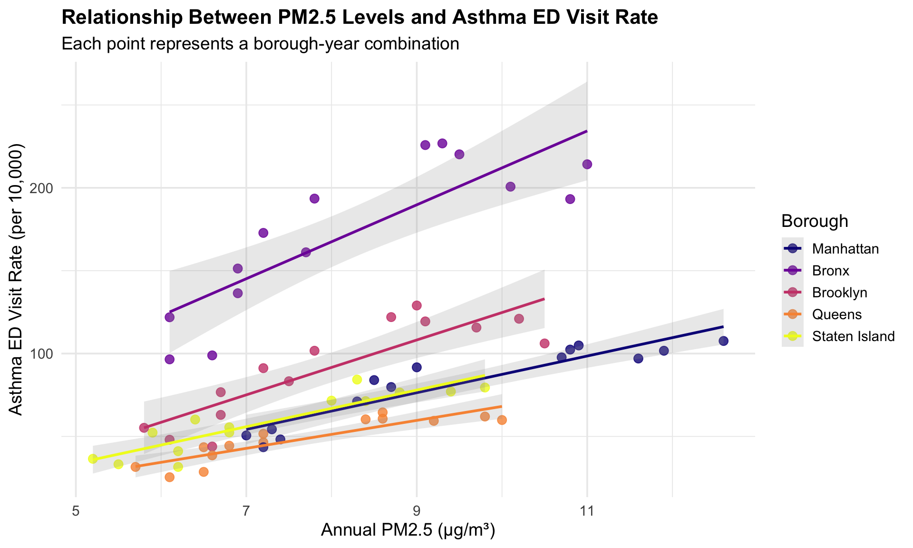
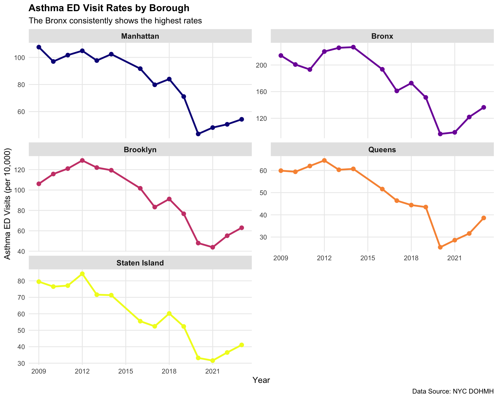
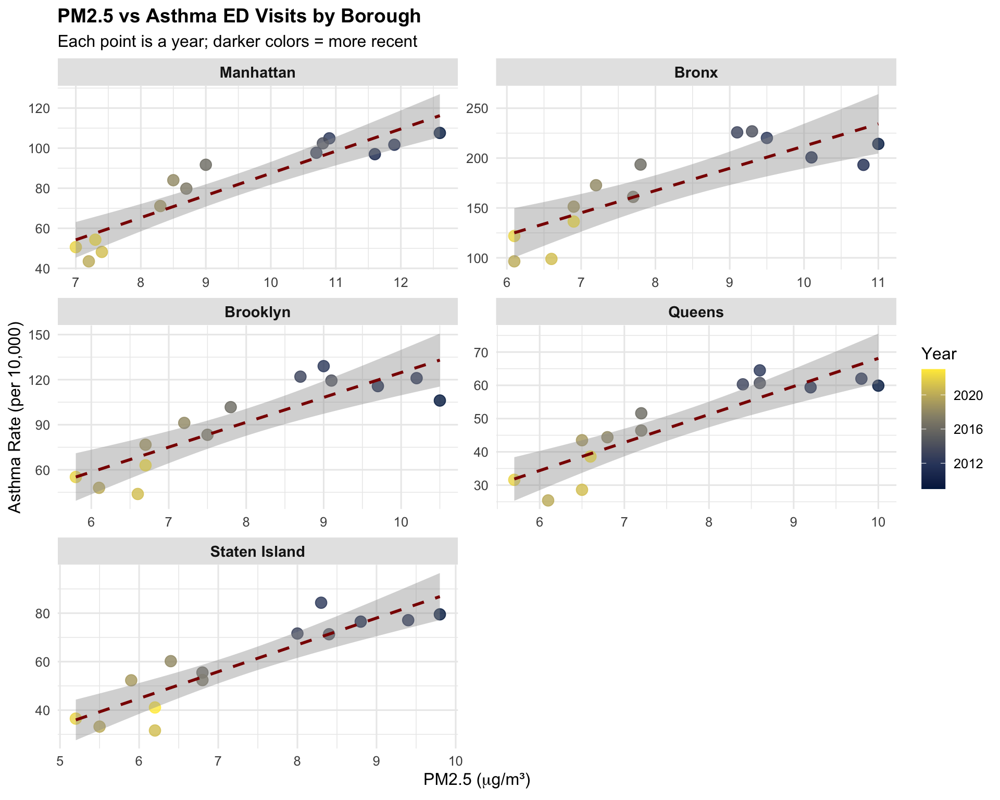
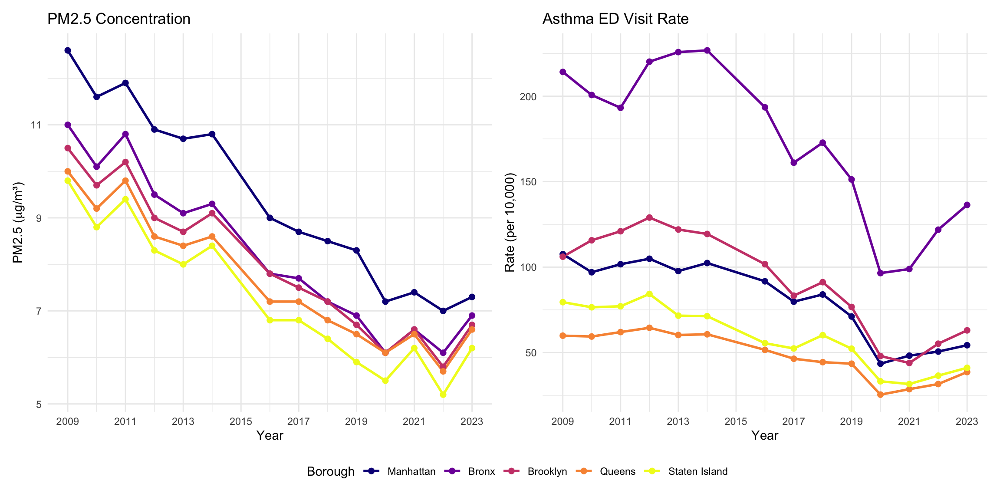
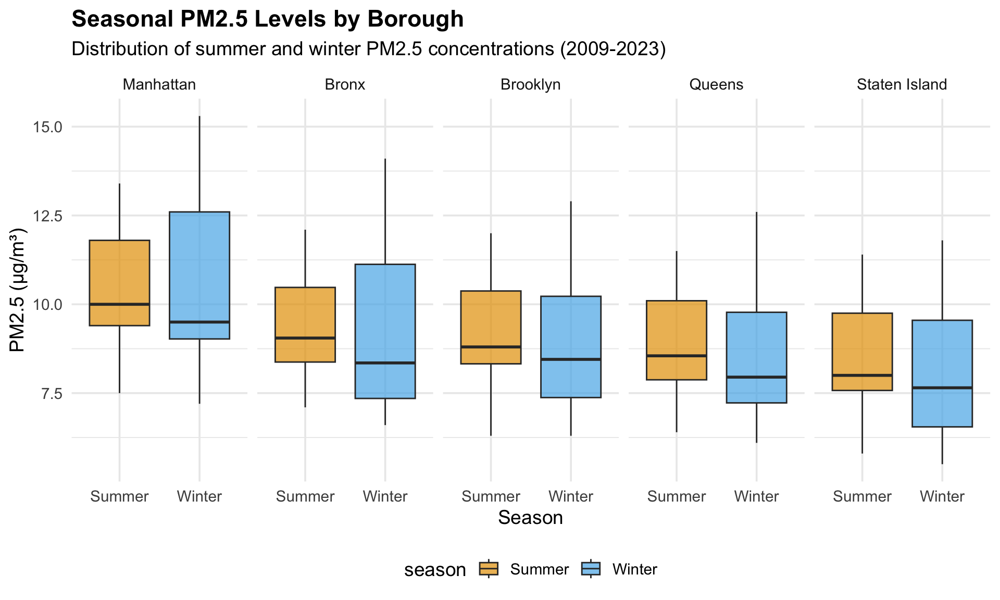
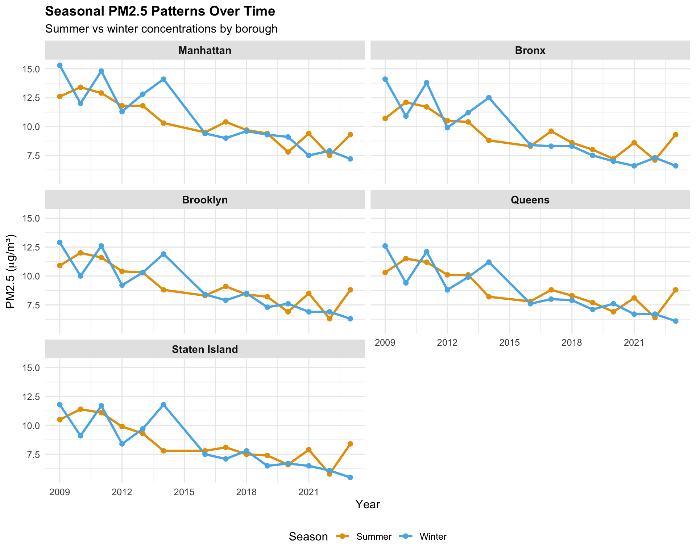
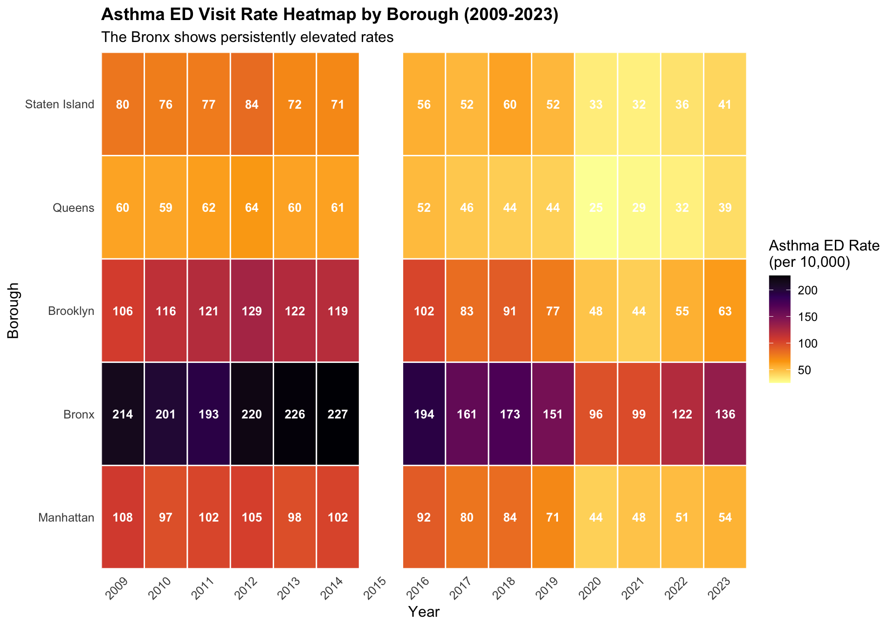
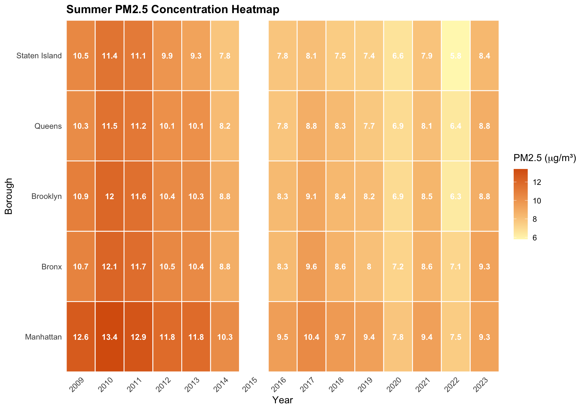
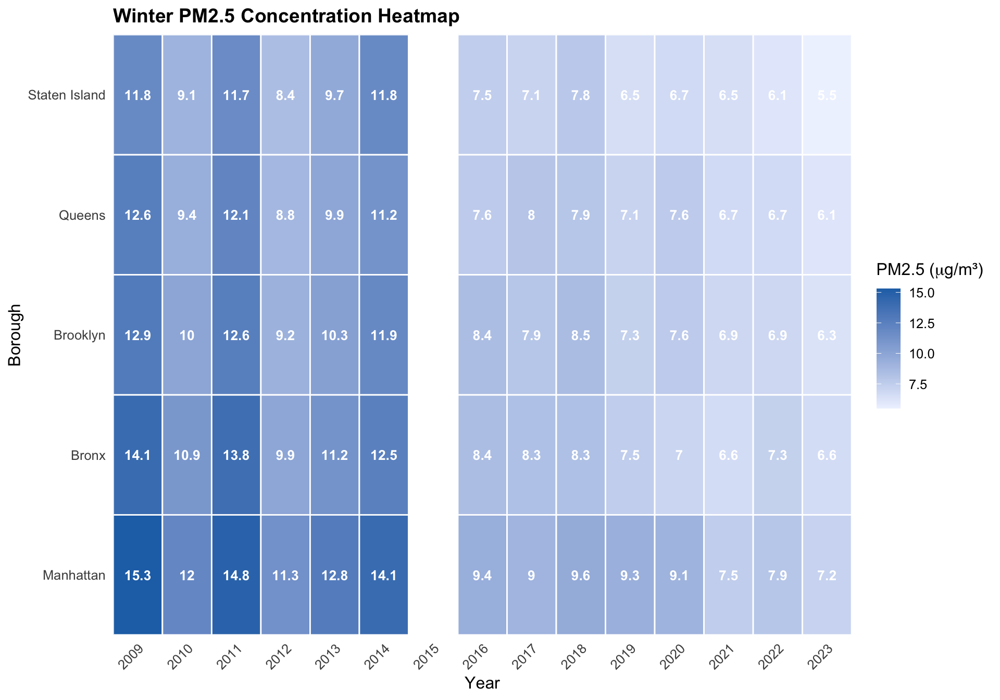
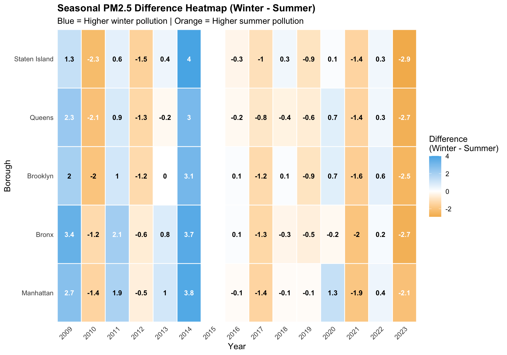

Exploratory Data Analysis
Air Pollution and Asthma in NYC (2009-2023)
Minseo Kim, Wenyu Lu, Jiaqi Zhu
2025-12-01
Overview
This comprehensive exploratory data analysis examines the relationship between air pollution (PM2.5) and asthma emergency department visits across NYC’s five boroughs from 2009 to 2023. Our analysis combines time-series trends, seasonal patterns, geographic comparisons, and correlation analyses to understand how air quality affects respiratory health in different neighborhoods.
Dataset Summary
# Create summary table
summary_table <- tibble(
Metric = c("Time Period", "Boroughs", "Total Observations",
"PM2.5 Range (μg/m³)", "Asthma Rate Range (per 10,000)"),
Value = c(
"2009-2023 (14 years)",
"Manhattan, Bronx, Brooklyn, Queens, Staten Island",
nrow(pm25_asthma_clean),
sprintf("%.1f - %.1f", min(pm25_asthma_clean$pm25_annual, na.rm = TRUE),
max(pm25_asthma_clean$pm25_annual, na.rm = TRUE)),
sprintf("%.1f - %.1f", min(pm25_asthma_clean$asthma_rate, na.rm = TRUE),
max(pm25_asthma_clean$asthma_rate, na.rm = TRUE))
)
)
kable(summary_table, col.names = c("", ""), align = c("l", "l"))| Time Period | 2009-2023 (14 years) |
| Boroughs | Manhattan, Bronx, Brooklyn, Queens, Staten Island |
| Total Observations | 70 |
| PM2.5 Range (μg/m³) | 5.2 - 12.6 |
| Asthma Rate Range (per 10,000) | 25.4 - 226.8 |
Key Statistics by Borough
borough_summary <- pm25_asthma_clean %>%
group_by(borough) %>%
summarise(
`Mean PM2.5` = round(mean(pm25_annual, na.rm = TRUE), 1),
`Mean Asthma Rate` = round(mean(asthma_rate, na.rm = TRUE), 1),
`2023 PM2.5` = round(pm25_annual[year == 2023], 1),
`2023 Asthma` = round(asthma_rate[year == 2023], 1),
`PM2.5 Change` = round(pm25_annual[year == 2023] - pm25_annual[year == 2009], 1),
`Asthma Change` = round(asthma_rate[year == 2023] - asthma_rate[year == 2009], 1)
) %>%
arrange(desc(`Mean Asthma Rate`))
datatable(borough_summary,
options = list(pageLength = 5, dom = 't'),
rownames = FALSE) %>%
formatStyle('Mean Asthma Rate',
background = styleColorBar(borough_summary$`Mean Asthma Rate`, '#f8cecc'),
backgroundSize = '100% 90%',
backgroundRepeat = 'no-repeat',
backgroundPosition = 'center')Time Series Analysis
Analysis by: Jiaqi Zhu | Interactive visualizations showing temporal trends
PM2.5 Trends Over Time
p1 <- pm25_asthma_clean %>%
plot_ly(x = ~year, y = ~pm25_annual, color = ~borough,
type = 'scatter', mode = 'lines+markers',
colors = viridis(5),
hovertemplate = paste(
'<b>%{fullData.name}</b><br>',
'Year: %{x}<br>',
'PM2.5: %{y:.2f} μg/m³<br>',
'<extra></extra>'
)) %>%
layout(
title = list(
text = "<b>Annual PM2.5 Concentrations by Borough (2009-2023)</b>",
font = list(size = 16)
),
xaxis = list(
title = "Year",
tickfont = list(size = 12),
gridcolor = 'rgba(200,200,200,0.3)'
),
yaxis = list(
title = "PM2.5 (μg/m³)",
tickfont = list(size = 12),
gridcolor = 'rgba(200,200,200,0.3)'
),
hovermode = 'closest',
legend = list(
title = list(text = '<b>Borough</b>'),
orientation = 'v',
x = 1.02,
y = 1
),
plot_bgcolor = 'rgba(250,250,250,0.9)',
paper_bgcolor = 'white',
margin = list(r = 150)
)
p1Key Finding: All five boroughs show consistent downward trends in PM2.5 concentrations, with Manhattan experiencing the steepest decline from 12.6 to 7.3 μg/m³ (42% reduction).
Asthma ED Visit Trends
p2 <- pm25_asthma_clean %>%
plot_ly(x = ~year, y = ~asthma_rate, color = ~borough,
type = 'scatter', mode = 'lines+markers',
colors = viridis(5, option = "plasma"),
hovertemplate = paste(
'<b>%{fullData.name}</b><br>',
'Year: %{x}<br>',
'ED Visit Rate: %{y:.1f} per 10,000<br>',
'<extra></extra>'
)) %>%
layout(
title = list(
text = "<b>Asthma Emergency Department Visit Rates by Borough (2009-2023)</b>",
font = list(size = 16)
),
xaxis = list(
title = "Year",
tickfont = list(size = 12),
gridcolor = 'rgba(200,200,200,0.3)'
),
yaxis = list(
title = "ED Visit Rate (per 10,000 population)",
tickfont = list(size = 12),
gridcolor = 'rgba(200,200,200,0.3)'
),
hovermode = 'closest',
legend = list(
title = list(text = '<b>Borough</b>'),
orientation = 'v',
x = 1.02,
y = 1
),
plot_bgcolor = 'rgba(250,250,250,0.9)',
paper_bgcolor = 'white',
margin = list(r = 150)
)
p2Key Finding: The Bronx consistently shows asthma ED rates 2-4 times higher than other boroughs throughout the study period, highlighting persistent health disparities.
Combined View
combined_plot <- subplot(
p1 %>% layout(showlegend = TRUE),
p2 %>% layout(showlegend = FALSE),
nrows = 2,
shareX = FALSE,
titleY = TRUE,
margin = 0.08
) %>%
layout(
title = list(
text = "<b>Air Quality and Asthma Trends in NYC Boroughs</b>",
font = list(size = 18)
),
height = 800,
xaxis = list(title = "Year"),
xaxis2 = list(title = "Year")
)
combined_plotBorough-Specific Dual-Axis Plots
Manhattan
manhattan_data <- pm25_asthma_clean %>% filter(borough == "Manhattan")
plot_ly(manhattan_data) %>%
add_trace(
x = ~year,
y = ~pm25_annual,
name = "PM2.5",
type = "scatter",
mode = "lines+markers",
line = list(color = "#440154", width = 3),
marker = list(size = 8),
yaxis = "y1"
) %>%
add_trace(
x = ~year,
y = ~asthma_rate,
name = "Asthma ED Rate",
type = "scatter",
mode = "lines+markers",
line = list(color = "#FDE724", width = 3, dash = "dash"),
marker = list(size = 8, symbol = "square"),
yaxis = "y2"
) %>%
layout(
title = list(text = "<b>Manhattan: PM2.5 and Asthma ED Rates</b>", font = list(size = 16)),
xaxis = list(title = "Year"),
yaxis = list(title = "<b>PM2.5 (μg/m³)</b>", titlefont = list(color = "#440154"), side = "left"),
yaxis2 = list(title = "<b>ED Rate (per 10,000)</b>", titlefont = list(color = "#FDE724"), overlaying = "y", side = "right"),
legend = list(x = 0.02, y = 0.98),
hovermode = "x unified",
plot_bgcolor = 'rgba(250,250,250,0.9)'
)Bronx
bronx_data <- pm25_asthma_clean %>% filter(borough == "Bronx")
plot_ly(bronx_data) %>%
add_trace(
x = ~year, y = ~pm25_annual, name = "PM2.5", type = "scatter", mode = "lines+markers",
line = list(color = "#31688E", width = 3), marker = list(size = 8), yaxis = "y1"
) %>%
add_trace(
x = ~year, y = ~asthma_rate, name = "Asthma ED Rate", type = "scatter", mode = "lines+markers",
line = list(color = "#CC4678", width = 3, dash = "dash"), marker = list(size = 8, symbol = "square"), yaxis = "y2"
) %>%
layout(
title = list(text = "<b>Bronx: PM2.5 and Asthma ED Rates</b>", font = list(size = 16)),
xaxis = list(title = "Year"),
yaxis = list(title = "<b>PM2.5 (μg/m³)</b>", titlefont = list(color = "#31688E"), side = "left"),
yaxis2 = list(title = "<b>ED Rate (per 10,000)</b>", titlefont = list(color = "#CC4678"), overlaying = "y", side = "right"),
legend = list(x = 0.02, y = 0.98),
hovermode = "x unified",
plot_bgcolor = 'rgba(250,250,250,0.9)'
)Brooklyn
brooklyn_data <- pm25_asthma_clean %>% filter(borough == "Brooklyn")
plot_ly(brooklyn_data) %>%
add_trace(
x = ~year, y = ~pm25_annual, name = "PM2.5", type = "scatter", mode = "lines+markers",
line = list(color = "#35B779", width = 3), marker = list(size = 8), yaxis = "y1"
) %>%
add_trace(
x = ~year, y = ~asthma_rate, name = "Asthma ED Rate", type = "scatter", mode = "lines+markers",
line = list(color = "#F98E09", width = 3, dash = "dash"), marker = list(size = 8, symbol = "square"), yaxis = "y2"
) %>%
layout(
title = list(text = "<b>Brooklyn: PM2.5 and Asthma ED Rates</b>", font = list(size = 16)),
xaxis = list(title = "Year"),
yaxis = list(title = "<b>PM2.5 (μg/m³)</b>", titlefont = list(color = "#35B779"), side = "left"),
yaxis2 = list(title = "<b>ED Rate (per 10,000)</b>", titlefont = list(color = "#F98E09"), overlaying = "y", side = "right"),
legend = list(x = 0.02, y = 0.98),
hovermode = "x unified",
plot_bgcolor = 'rgba(250,250,250,0.9)'
)Queens
queens_data <- pm25_asthma_clean %>% filter(borough == "Queens")
plot_ly(queens_data) %>%
add_trace(
x = ~year, y = ~pm25_annual, name = "PM2.5", type = "scatter", mode = "lines+markers",
line = list(color = "#1F9E89", width = 3), marker = list(size = 8), yaxis = "y1"
) %>%
add_trace(
x = ~year, y = ~asthma_rate, name = "Asthma ED Rate", type = "scatter", mode = "lines+markers",
line = list(color = "#E16462", width = 3, dash = "dash"), marker = list(size = 8, symbol = "square"), yaxis = "y2"
) %>%
layout(
title = list(text = "<b>Queens: PM2.5 and Asthma ED Rates</b>", font = list(size = 16)),
xaxis = list(title = "Year"),
yaxis = list(title = "<b>PM2.5 (μg/m³)</b>", titlefont = list(color = "#1F9E89"), side = "left"),
yaxis2 = list(title = "<b>ED Rate (per 10,000)</b>", titlefont = list(color = "#E16462"), overlaying = "y", side = "right"),
legend = list(x = 0.02, y = 0.98),
hovermode = "x unified",
plot_bgcolor = 'rgba(250,250,250,0.9)'
)Staten Island
staten_data <- pm25_asthma_clean %>% filter(borough == "Staten Island")
plot_ly(staten_data) %>%
add_trace(
x = ~year, y = ~pm25_annual, name = "PM2.5", type = "scatter", mode = "lines+markers",
line = list(color = "#B5DE2B", width = 3), marker = list(size = 8), yaxis = "y1"
) %>%
add_trace(
x = ~year, y = ~asthma_rate, name = "Asthma ED Rate", type = "scatter", mode = "lines+markers",
line = list(color = "#FCA50A", width = 3, dash = "dash"), marker = list(size = 8, symbol = "square"), yaxis = "y2"
) %>%
layout(
title = list(text = "<b>Staten Island: PM2.5 and Asthma ED Rates</b>", font = list(size = 16)),
xaxis = list(title = "Year"),
yaxis = list(title = "<b>PM2.5 (μg/m³)</b>", titlefont = list(color = "#B5DE2B"), side = "left"),
yaxis2 = list(title = "<b>ED Rate (per 10,000)</b>", titlefont = list(color = "#FCA50A"), overlaying = "y", side = "right"),
legend = list(x = 0.02, y = 0.98),
hovermode = "x unified",
plot_bgcolor = 'rgba(250,250,250,0.9)'
)Association Analysis
Analysis by: Wenyu Lu | Exploring correlations and relationships
PM2.5 vs Asthma ED Visits
This scatterplot shows the relationship between annual PM2.5 levels and asthma emergency department visit rates across all boroughs.
ggplot(pm25_asthma_clean, aes(x = pm25_annual, y = asthma_rate, color = borough)) +
geom_point(size = 3, alpha = 0.8) +
geom_smooth(method = "lm", se = TRUE, alpha = 0.2) +
scale_color_viridis_d(option = "plasma") +
labs(
title = "Relationship Between PM2.5 Levels and Asthma ED Visit Rate",
subtitle = "Each point represents a borough-year combination",
x = "Annual PM2.5 (μg/m³)",
y = "Asthma ED Visit Rate (per 10,000)",
color = "Borough"
) +
theme_minimal(base_size = 14) +
theme(
plot.title = element_text(face = "bold", size = 16),
legend.position = "right"
)
Correlation Analysis
# Calculate correlations by borough
correlations <- pm25_asthma_clean %>%
group_by(borough) %>%
summarise(
Correlation = cor(pm25_annual, asthma_rate, use = "complete.obs"),
`Sample Size` = n()
) %>%
mutate(
Correlation = round(Correlation, 3),
Strength = case_when(
abs(Correlation) >= 0.7 ~ "Strong",
abs(Correlation) >= 0.4 ~ "Moderate",
TRUE ~ "Weak"
)
) %>%
arrange(desc(abs(Correlation)))
kable(correlations,
col.names = c("Borough", "Correlation (r)", "N", "Strength"),
caption = "Correlation between PM2.5 and Asthma Rate by Borough")| Borough | Correlation (r) | N | Strength |
|---|---|---|---|
| Manhattan | 0.923 | 14 | Strong |
| Staten Island | 0.902 | 14 | Strong |
| Queens | 0.888 | 14 | Strong |
| Brooklyn | 0.866 | 14 | Strong |
| Bronx | 0.836 | 14 | Strong |
Trend Analysis
trends <- pm25_asthma_clean %>%
group_by(borough) %>%
arrange(year) %>%
mutate(
pm25_change = pm25_annual - lag(pm25_annual),
asthma_change = asthma_rate - lag(asthma_rate)
) %>%
filter(!is.na(pm25_change)) %>%
summarise(
`Avg PM2.5 Change/Year` = round(mean(pm25_change, na.rm = TRUE), 3),
`Avg Asthma Change/Year` = round(mean(asthma_change, na.rm = TRUE), 3),
`Change Correlation` = round(cor(pm25_change, asthma_change, use = "complete.obs"), 3)
)
kable(trends,
caption = "Year-over-Year Changes and Their Correlations")| borough | Avg PM2.5 Change/Year | Avg Asthma Change/Year | Change Correlation |
|---|---|---|---|
| Manhattan | -0.408 | -4.100 | 0.577 |
| Bronx | -0.315 | -5.985 | 0.210 |
| Brooklyn | -0.292 | -3.315 | 0.189 |
| Queens | -0.262 | -1.638 | 0.385 |
| Staten Island | -0.277 | -2.954 | 0.254 |
Borough Comparison
Analysis by: Minseo (Brenda) Kim | Geographic patterns and disparities
Faceted Trends
PM2.5 Trends
ggplot(pm25_asthma_clean, aes(x = year, y = pm25_annual, color = borough)) +
geom_line(linewidth = 1.2) +
geom_point(size = 2.5) +
facet_wrap(~ borough, ncol = 2) +
scale_color_viridis_d(option = "plasma") +
scale_x_continuous(breaks = seq(2009, 2023, 3)) +
labs(
title = "Annual PM2.5 Concentration Trends by Borough",
subtitle = "All boroughs show declining air pollution over time",
x = "Year",
y = expression("PM2.5 ("*mu*"g/m³)"),
caption = "Data Source: NYC Open Data"
) +
theme_minimal(base_size = 12) +
theme(
plot.title = element_text(face = "bold", size = 14),
strip.text = element_text(face = "bold", size = 11),
strip.background = element_rect(fill = "gray90", color = NA),
legend.position = "none",
panel.grid.minor = element_blank()
)
Asthma Rates
ggplot(pm25_asthma_clean, aes(x = year, y = asthma_rate, color = borough)) +
geom_line(linewidth = 1.2) +
geom_point(size = 2.5) +
facet_wrap(~ borough, ncol = 2, scales = "free_y") +
scale_color_viridis_d(option = "plasma") +
scale_x_continuous(breaks = seq(2009, 2023, 3)) +
labs(
title = "Asthma ED Visit Rates by Borough",
subtitle = "The Bronx consistently shows the highest rates",
x = "Year",
y = "Asthma ED Visits (per 10,000)",
caption = "Data Source: NYC DOHMH"
) +
theme_minimal(base_size = 12) +
theme(
plot.title = element_text(face = "bold", size = 14),
strip.text = element_text(face = "bold", size = 11),
strip.background = element_rect(fill = "gray90", color = NA),
legend.position = "none",
panel.grid.minor = element_blank()
)
Association by Borough
ggplot(pm25_asthma_clean, aes(x = pm25_annual, y = asthma_rate, color = year)) +
geom_point(size = 3.5, alpha = 0.8) +
geom_smooth(method = "lm", se = TRUE, color = "darkred", linetype = "dashed") +
facet_wrap(~ borough, ncol = 2, scales = "free") +
scale_color_viridis_c(option = "cividis") +
labs(
title = "PM2.5 vs Asthma ED Visits by Borough",
subtitle = "Each point is a year; darker colors = more recent",
x = expression("PM2.5 ("*mu*"g/m³)"),
y = "Asthma Rate (per 10,000)",
color = "Year"
) +
theme_minimal(base_size = 12) +
theme(
plot.title = element_text(face = "bold", size = 14),
strip.text = element_text(face = "bold", size = 11),
strip.background = element_rect(fill = "gray90", color = NA)
)
Side-by-Side
p1 <- ggplot(pm25_asthma_clean, aes(x = year, y = pm25_annual, color = borough)) +
geom_line(linewidth = 1) +
geom_point(size = 2) +
scale_color_viridis_d(option = "plasma") +
scale_x_continuous(breaks = seq(2009, 2023, 2)) +
labs(
title = "PM2.5 Concentration",
x = "Year",
y = expression("PM2.5 ("*mu*"g/m³)"),
color = "Borough"
) +
theme_minimal() +
theme(legend.position = "bottom")
p2 <- ggplot(pm25_asthma_clean, aes(x = year, y = asthma_rate, color = borough)) +
geom_line(linewidth = 1) +
geom_point(size = 2) +
scale_color_viridis_d(option = "plasma") +
scale_x_continuous(breaks = seq(2009, 2023, 2)) +
labs(
title = "Asthma ED Visit Rate",
x = "Year",
y = "Rate (per 10,000)",
color = "Borough"
) +
theme_minimal() +
theme(legend.position = "bottom")
p1 + p2 + plot_layout(guides = "collect") & theme(legend.position = "bottom")
Seasonal Patterns
Analysis by: Wenyu Lu & Minseo Kim | Seasonal variation analysis
Summer vs Winter PM2.5
season_data <- pm25_asthma_clean %>%
pivot_longer(
cols = c(pm25_summer, pm25_winter),
names_to = "season",
values_to = "pm25"
) %>%
mutate(
season = case_when(
season == "pm25_summer" ~ "Summer",
season == "pm25_winter" ~ "Winter"
)
)
ggplot(season_data, aes(x = season, y = pm25, fill = season)) +
geom_boxplot(alpha = 0.7) +
facet_wrap(~ borough, ncol = 5) +
scale_fill_manual(values = c("Summer" = "#E69F00", "Winter" = "#56B4E9")) +
labs(
title = "Seasonal PM2.5 Levels by Borough",
subtitle = "Distribution of summer and winter PM2.5 concentrations (2009-2023)",
x = "Season",
y = "PM2.5 (μg/m³)"
) +
theme_minimal(base_size = 14) +
theme(
plot.title = element_text(face = "bold"),
legend.position = "bottom"
)
Seasonal Trends by Borough
ggplot(df_long %>% filter(pm25_type != "Annual"),
aes(x = year, y = pm25_value, color = pm25_type)) +
geom_line(linewidth = 1.1) +
geom_point(size = 2) +
facet_wrap(~ borough, ncol = 2) +
scale_color_manual(values = c("Summer" = "#E69F00", "Winter" = "#56B4E9")) +
scale_x_continuous(breaks = seq(2009, 2023, 3)) +
labs(
title = "Seasonal PM2.5 Patterns Over Time",
subtitle = "Summer vs winter concentrations by borough",
x = "Year",
y = expression("PM2.5 ("*mu*"g/m³)"),
color = "Season"
) +
theme_minimal(base_size = 12) +
theme(
plot.title = element_text(face = "bold", size = 14),
strip.text = element_text(face = "bold", size = 11),
strip.background = element_rect(fill = "gray90", color = NA),
legend.position = "bottom"
)
Heatmap Analysis
Analysis by: Minseo (Brenda) Kim | Comprehensive visual patterns
PM2.5 Annual
ggplot(pm25_asthma_clean, aes(x = year, y = borough, fill = pm25_annual)) +
geom_tile(color = "white", linewidth = 0.5) +
geom_text(aes(label = round(pm25_annual, 1)), color = "white", size = 3.5, fontface = "bold") +
scale_fill_viridis_c(option = "magma", direction = -1,
name = expression("PM2.5 ("*mu*"g/m³)")) +
scale_x_continuous(breaks = 2009:2023, expand = c(0, 0)) +
scale_y_discrete(expand = c(0, 0)) +
labs(
title = "Annual PM2.5 Concentration Heatmap by Borough (2009-2023)",
subtitle = "Darker colors = higher pollution",
x = "Year",
y = "Borough"
) +
theme_minimal(base_size = 12) +
theme(
plot.title = element_text(face = "bold", size = 14),
axis.text.x = element_text(angle = 45, hjust = 1),
panel.grid = element_blank()
)
Asthma Rate
ggplot(pm25_asthma_clean, aes(x = year, y = borough, fill = asthma_rate)) +
geom_tile(color = "white", linewidth = 0.5) +
geom_text(aes(label = round(asthma_rate, 0)), color = "white", size = 3.5, fontface = "bold") +
scale_fill_viridis_c(option = "inferno", direction = -1,
name = "Asthma ED Rate\n(per 10,000)") +
scale_x_continuous(breaks = 2009:2023, expand = c(0, 0)) +
scale_y_discrete(expand = c(0, 0)) +
labs(
title = "Asthma ED Visit Rate Heatmap by Borough (2009-2023)",
subtitle = "The Bronx shows persistently elevated rates",
x = "Year",
y = "Borough"
) +
theme_minimal(base_size = 12) +
theme(
plot.title = element_text(face = "bold", size = 14),
axis.text.x = element_text(angle = 45, hjust = 1),
panel.grid = element_blank()
)
Summer PM2.5
ggplot(pm25_asthma_clean, aes(x = year, y = borough, fill = pm25_summer)) +
geom_tile(color = "white", linewidth = 0.5) +
geom_text(aes(label = round(pm25_summer, 1)), color = "white", size = 3.5, fontface = "bold") +
scale_fill_gradient(low = "#FFF7BC", high = "#D95F0E",
name = expression("PM2.5 ("*mu*"g/m³)")) +
scale_x_continuous(breaks = 2009:2023, expand = c(0, 0)) +
scale_y_discrete(expand = c(0, 0)) +
labs(
title = "Summer PM2.5 Concentration Heatmap",
x = "Year",
y = "Borough"
) +
theme_minimal(base_size = 12) +
theme(
plot.title = element_text(face = "bold", size = 14),
axis.text.x = element_text(angle = 45, hjust = 1),
panel.grid = element_blank()
)
Winter PM2.5
ggplot(pm25_asthma_clean, aes(x = year, y = borough, fill = pm25_winter)) +
geom_tile(color = "white", linewidth = 0.5) +
geom_text(aes(label = round(pm25_winter, 1)), color = "white", size = 3.5, fontface = "bold") +
scale_fill_gradient(low = "#EFF3FF", high = "#2171B5",
name = expression("PM2.5 ("*mu*"g/m³)")) +
scale_x_continuous(breaks = 2009:2023, expand = c(0, 0)) +
scale_y_discrete(expand = c(0, 0)) +
labs(
title = "Winter PM2.5 Concentration Heatmap",
x = "Year",
y = "Borough"
) +
theme_minimal(base_size = 12) +
theme(
plot.title = element_text(face = "bold", size = 14),
axis.text.x = element_text(angle = 45, hjust = 1),
panel.grid = element_blank()
)
Seasonal Difference
ggplot(pm25_asthma_clean, aes(x = year, y = borough, fill = pm25_diff)) +
geom_tile(color = "white", linewidth = 0.5) +
geom_text(aes(label = round(pm25_diff, 1)),
color = ifelse(abs(pm25_asthma_clean$pm25_diff) > 2, "white", "black"),
size = 3.5, fontface = "bold") +
scale_fill_gradient2(low = "#E69F00", mid = "white", high = "#56B4E9",
midpoint = 0,
name = "Difference\n(Winter - Summer)") +
scale_x_continuous(breaks = 2009:2023, expand = c(0, 0)) +
scale_y_discrete(expand = c(0, 0)) +
labs(
title = "Seasonal PM2.5 Difference Heatmap (Winter - Summer)",
subtitle = "Blue = Higher winter pollution | Orange = Higher summer pollution",
x = "Year",
y = "Borough"
) +
theme_minimal(base_size = 12) +
theme(
plot.title = element_text(face = "bold", size = 14),
axis.text.x = element_text(angle = 45, hjust = 1),
panel.grid = element_blank()
)
Key Findings & Conclusions
Major Findings
Conclusions
Air Quality Progress: All five NYC boroughs demonstrated substantial reductions in PM2.5 concentrations between 2009 and 2023, with Manhattan showing the most dramatic improvement (5.3 μg/m³ decrease).
Persistent Health Disparities: Despite overall improvements, the Bronx continues to experience asthma ED visit rates 2-4 times higher than other boroughs, indicating environmental health inequities requiring targeted intervention.
Strong PM2.5-Asthma Correlation: Positive associations between PM2.5 levels and asthma ED visits were observed across all boroughs, supporting the causal relationship between air pollution and respiratory health outcomes.
Changing Seasonal Patterns: Historical winter peaks in PM2.5 have diminished in recent years, with summer concentrations becoming relatively more prominent, potentially due to changing weather patterns or emission sources.
Geographic Variations: Significant borough-level differences in both PM2.5 concentrations and asthma rates suggest that local factors (traffic density, industrial activity, green space) play important roles beyond citywide air quality trends.
Public Health Implications
- Targeted Interventions: The Bronx requires focused public health interventions to address disproportionate asthma burdens
- Continued Monitoring: Despite improvements, PM2.5 levels still impact respiratory health outcomes
- Policy Success: Declining PM2.5 trends suggest that air quality policies have been effective
- Environmental Justice: Persistent disparities highlight the need for equitable environmental health policies
Report Generated: December 01, 2025 at 23:56
Data Sources: - PM2.5 Data: NYC Open Data - Asthma ED Data: NYC Department of Health and Mental Hygiene (DOHMH)
Analysis Team: Wenyu Lu, Jiaqi Zhu, Minseo (Brenda) Kim